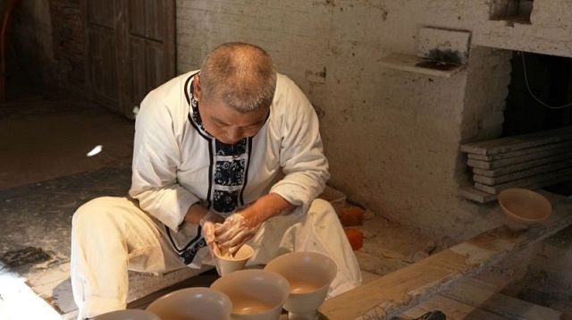

Porselenin sırrı Hollanda'da çözüldü: Çin çömlekçilikte Avrupa'yı nasıl etkiledi?
Çin'in Jingdezhen kentindeki çömlekçiler daha önce benzeri görülmemiş, büyülü bir malzeme bulmuştu. Bir sır olarak saklanan üretim sürecini yalnızca onlar biliyordu. Fakat sonra Hollandalı çömlekçiler, kendi mavi-beyaz seramiklerini yapmaya başladı.
Çin'in Jingdezhen kentinin meşhur mavi-beyaz Qinghuaci porseleni
Qinghuaci porseleni 72 etaptan oluşan karmaşık bir süreçten geçerek yapılır. Dip alma olarak adlandırılan aşamada çamurun fazlalıkları alınır. Kalınlığın çok hassas bir şekilde ayarlanması gerekir. Milimetrenin onda birini geçmeyecek bir hata payı verilir. Dip alma çok yetenekli ustalar tarafından yapılması gereken son derece hassas bir işlem.

Sırlama aşamasına gelindiğindeyse kap çok yavaşça daldırılır ancak
şaşırtıcı derecede hızlı bir şekilde çıkarılır. Bu hız nesnenin
şekline göre belirlenir. Zanaatkar buna karar vermek için
tecrübesine güvenir.
Zarif sır altı rengi mavi-beyaz porselenin ayırt edici
özelliklerinden biri. Tasarımı, Çin’in soluklaştırma ve sivriltme
gibi, geleneksel mürekkepleme ve yıkama boyama tekniklerinden
bazıları kullanılarak yapılır. Yüzeyine işlenen her şey genellikle
bir tür kutsamayla ilişkilendirilen benzersiz bir sembolizme sahip.
Bunu günler boyunca, aralıksız, gece gündüz yapıyorlar. Fırının içerisindeki sıcaklık eşit şekilde dağılmadığı için farklı türdeki çömlekler, ihtiyaç duydukları ısı miktarına bağlı olarak içeride farklı yerlere konuyor. Örneğin mavi-beyaz porselen, fırın kapısının en yakınındaki, en sıcak yere ihtiyacı duyar.
Fırında en iyi, en parlak etkiyi elde etmek için çam odunu yakılır. Bunun nedeni çamın 1300 derecelik bir sıcaklıkta yağ yayması. Çam yağı, kabın üzerindeki sırla temas ettiğinde zengin, parlak, cilalanmış görünümlü bir yüzey oluşturur.